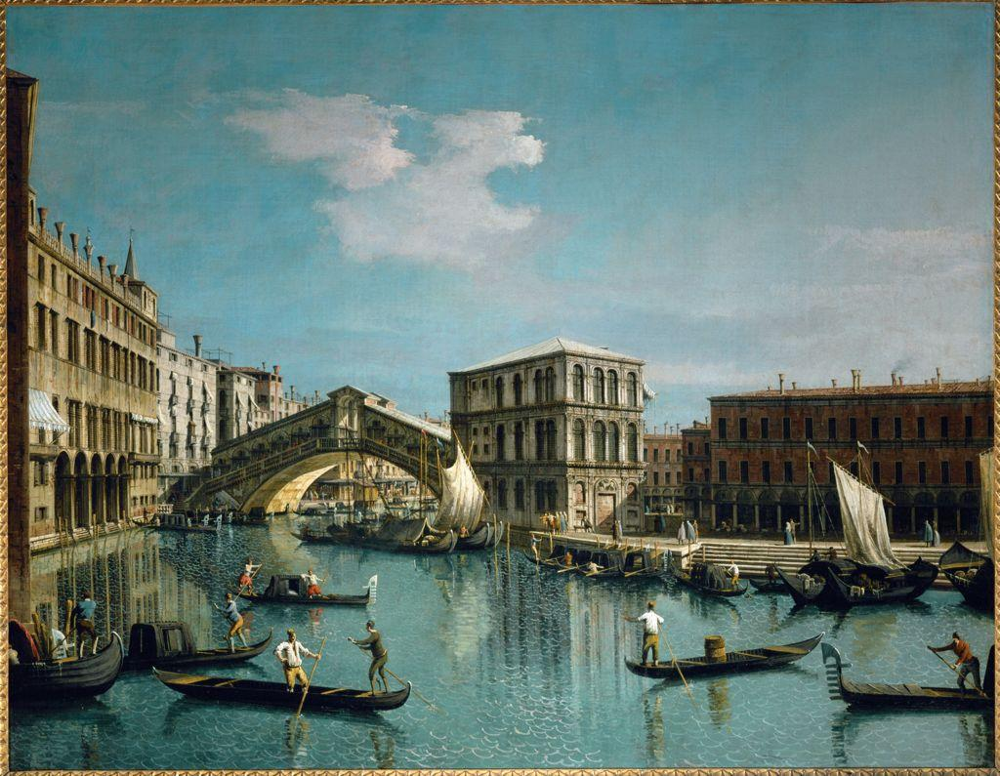

Before we name anything, look. Spend a full minute with the painting below. Do not read the caption yet. Let your eye travel from the near boats, back along the water, all the way to the bridge and the far buildings.

This is a flat canvas, yet you feel the canal stretch away for a quarter mile. Canaletto built that feeling with rules you can name: the buildings get smaller as they go back, their roof lines and water edges tilt toward a single distant point, the near boats overlap the far ones, and the far buildings turn slightly hazy and pale. Each is a deliberate, teachable depth cue.
Your eyes see the real world in three dimensions because you have two of them, set apart, feeding your brain two slightly different views. A drawing has no such trick. It is one flat plane. So artists learned to fake depth by copying the visual clues the eye already trusts. Painters call these clues depth cues, and a scene reads as deep when several of them agree.
The most exact of these cues is linear perspective: the rule that parallel lines heading away from you appear to draw together and meet at a single point in the distance. Stand on a straight road or hallway and you have seen it. The two edges are truly parallel, yet they seem to pinch toward each other far away. Here is that idea stripped to its bones.

Not every depth cue needs lines, though. In Lesson 4 you will use three that work even in a landscape with no straight edges at all: overlap (a nearer thing blocks part of a farther thing), relative size (the same kind of object drawn smaller reads as farther away), and atmospheric perspective (distant things go paler, bluer, and less detailed as the air between you and them thickens). Together, lines and no-line cues give you full control of space.
not found.
Meet the core terms by name now. You will use every one of them in the lessons that follow.
Space is one of the biggest decisions an artist controls. A flat, shallow picture and a deep, immersive one can show the exact same objects; what differs is whether the artist built the illusion of depth. Master it and you can place a viewer anywhere: pressed against a subject, or gazing across miles.
Your project for these two weeks is called Step Into This Place. You will design one original environment, an interior or an exterior, real or imagined, and use linear perspective plus the no-line depth cues to make it feel genuinely deep. The test of your work is simple: does a viewer feel they could walk into it?
▶ In your notebook, name one real place you know so well you could walk it with your eyes closed. Then open this.
- 1 The Illusion of Depth · you are here. Why depth is built, and the cues that build it.
- 2 Masters of Space · how Canaletto built real Venice and Escher broke it (critique modeled).
- 3 One-Point Perspective · skill builder: horizon line, vanishing point, orthogonals.
- 4 Depth Without Lines · skill builder: overlap, relative size, atmospheric perspective.
- 5 Plan & Create · design your space, VR walk, AI awareness, begin the artwork.
- 6 Refine, Reflect & Present · finish, self-critique, artist statement, portfolio.
The page is flat; the space is a decision. Canaletto did not find that quarter mile of canal, he constructed it, cue by cue. For the next two weeks you will learn those cues and build a place of your own that a viewer feels they could step right into.